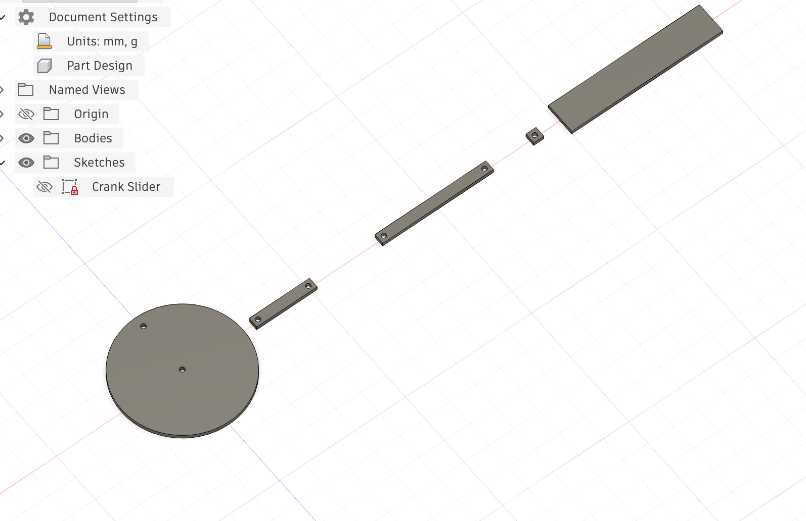
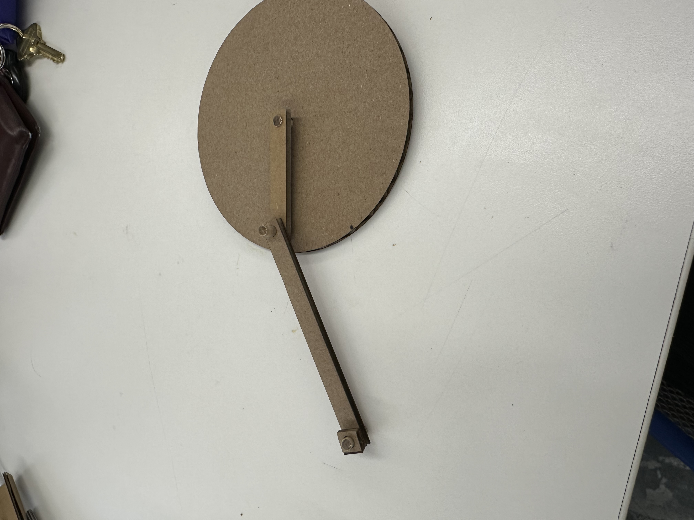
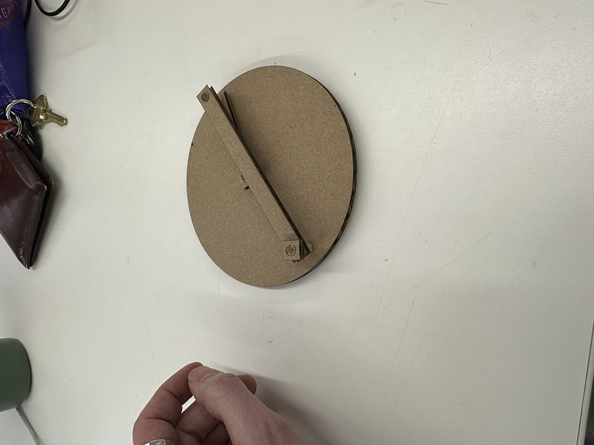
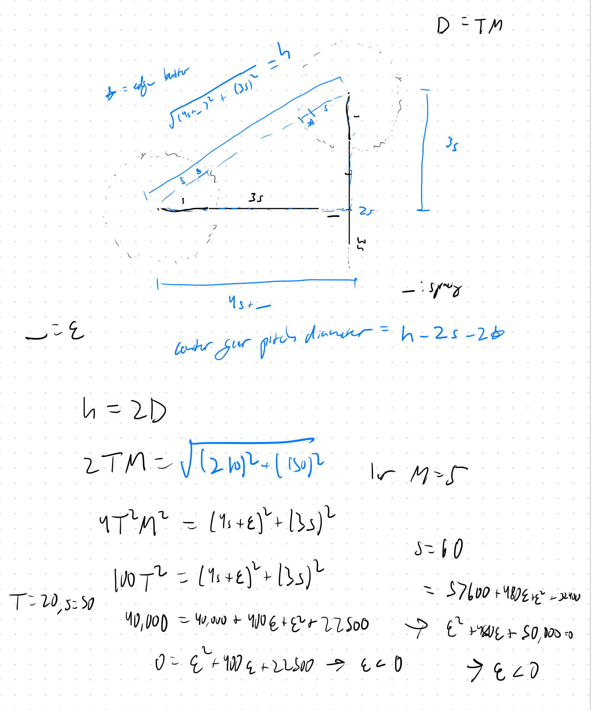
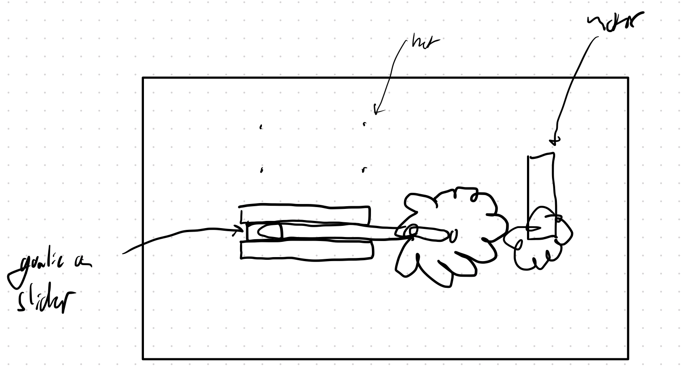
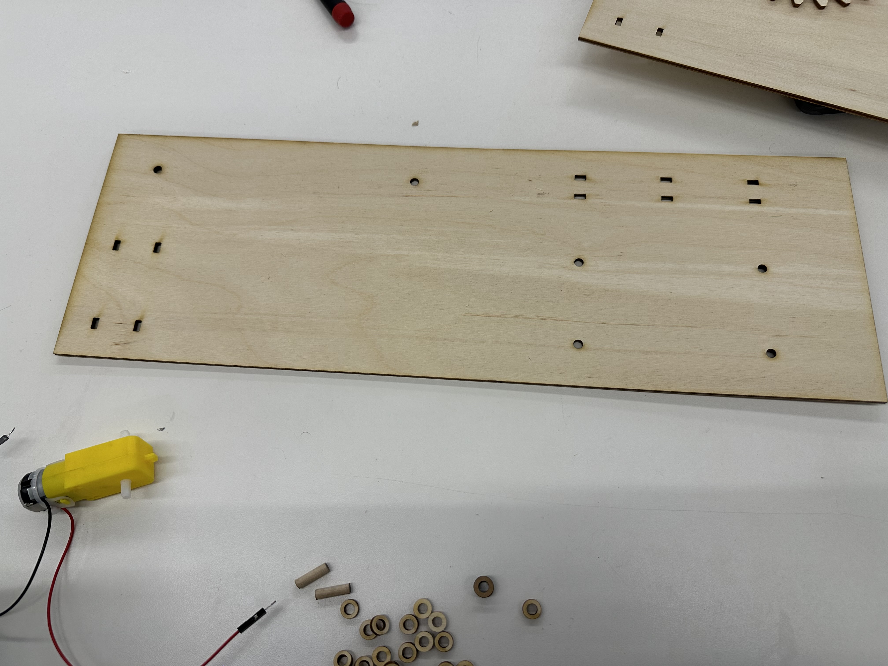
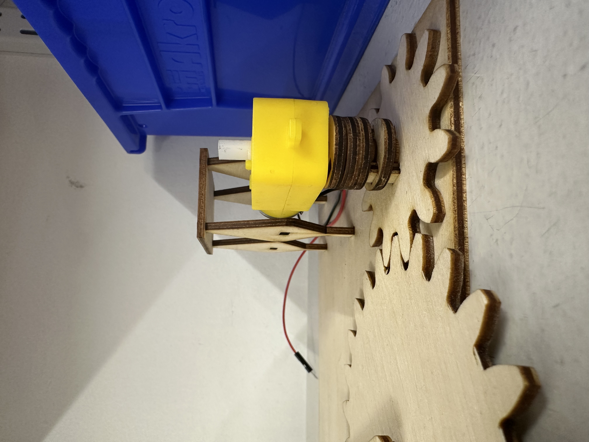
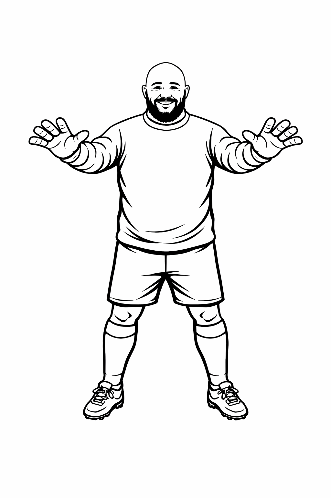
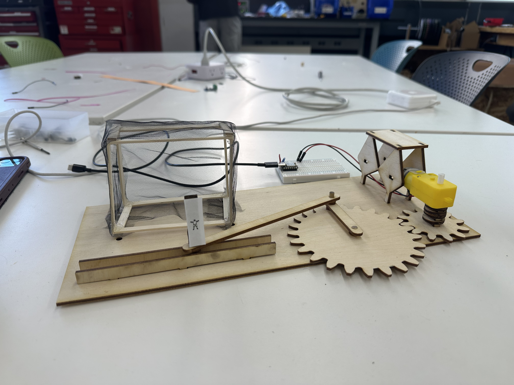
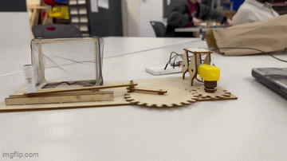

<div class="textcontainer typewriter-texture">
<p class="margin"> </p>
<h3>Week 3: Hand Tools and Fabrication</h3>
<h4>Perpetual Block Kinetic Sculpture</h4>
<p>This was a pretty challenging week that involved a lot of moving parts (literally). My idea was to convert the rotational motion of the gear to linear motion, and I went through a couple of versions before ending on my final kinetic sculpture. I originally was thinking of using something like a scotch yoke, but Bobby suggested looking into crank sliders, which convert rotational motion into perfectly linear motion (thank you for the suggestion, Bobby).</p>
<img src="./week3_1.gif" alt="Mechanism" style="max-width: 600px;">
<h4>Initial attempt</h4>
<p>My initial idea was to use two crank sliders where the objects in motion would be a goalie and a soccer ball. The idea is that the soccer ball, when fully extended, would hit the goalie as it is in the middle of the net, and the two would always line up, creating the visual that the goalie is "perpetually blocking" the ball.</p>
<p>To first get a feel for the how the two arms, which I will refer to as S (short arm) and L (long arm) for length, I first worked on a very simple crank slider without using gears. I chose to use 4.6 mm diameter wooden dowels, S = 50 mm, L = 100 MM, 10 mm wide arms, and a 10 x 10 mm slider.</p>



<p>After printing these out, I realized I need to make L longer so that the slider wouldn't run over the gears (I chose 3L as a safe number). I also noticed that the ball movement is constricted by S, for a full range of motion of 2S. This initial exercise made the importance of layering clear as well: I would need to make sufficient use of spacers and define clear layers so that the sliders can move smoothly and none of the components' heights would interfere. I also realized I likely would eventually need to move over to using plywood, as the components would be sturdier, and that the length of the slider would need to be longer to help direct it's motion.</p>
<p>I would need to take into account the module, pitch diameter, and number of teeth (all related by the module formula) for the gears. The pitch diameter would need to be influenced by S, as if the pitch diameter was too large, then the slider would hit it during a rotation. TFs suggested a minimum module of 5, and based on what I read online, I should aim for at least 20 gear teeth. To simplify the gears, I decided I would use the same size gears for the crank sliders and for the driving gear. Because I wanted the motion of the two sliders to always align, I ran into some difficulties trying to determine the exact geometries.</p>

<p> Let D be the pitch diameter for the gears. In the image, the sides of the triangle are the extensions of the sliders from the two crank slider gears when they should "meet" (as you can see I left a small gap so that they do not run into each other, and the hypotenuse, H, is 2D as all the gears are the same size and in a line. As you can see, the formula for H was quite complicated, and as I played around with different dimensions, I arrived at buffer distances between the two sliders that were even negative! To account for this, I decided to increase the module number M, and eventually got to module numbers of sqrt(42.1875), T = 20, and buffer room of 12.132.</p>
<p>After designing the initial gears and crank sliders, I decided to prototype the design in cardboard.</p>
<img src="./week3_6.HEIC.heic" alt="Cardboard prototype 1" style="max-width: 600px;">
<img src="./week3_7.HEIC.heic" alt="Cardboard prototype 2" style="max-width: 600px;">
<p>While the dimensions of the arms lined up, I quickly realized that the slider rails for the "ball" would interfere with the driving gear. To test one of the sliders, I moved the rails down and confirmed that the crank slider does work.</p>
<p class="margin"> </p>
<div class="flexrow">
<a id="btn" href="./Initial_Gears.f3d" download>Download Fusion File
</a>
</div>
<p class="margin"> </p>
<p>Given the complexity of the system and how all the gears and everything would need to line up perfectly, and given the remaining timeline (<36 hours) and materials, I decided to focus on getting one crank slider working for the goalie, which I could then turn into a "game" sculpture with a goalie protecting a soccer goal.</p>
<h4>Final Version: Blocking Bobby</h4>

<p>After pivoting to a single crank slider for the goalie, I first decided to focus on the base and sliders, leaving cutouts in the main board for motor base placement after. Given that I was no longer driving two crank sliders, I had a bit more flexibility with gear dimensions. To save space I decided on a gear ratio of 2:1 for the crank slider gear to the driving gear. I will use the subscript 1 for the larger gear and 2 for the smaller gear, I chose M = 4.5, T_1 = 24, T_2 = 12, so resulted in pitch diameters D_1 = 108 and D+2 = 54.</p>
<p>After cutting it out, I realized the holes for the gears were too far apart, as I had forgot to measure the distance in their radii.</p>

<p>After re-cutting, the gears all aligned</p>
<img src="./week3_10.jpg" alt="Gears aligned" style="max-width: 600px;">
<p>I then turned my focus toward the motor housing. I used different layers for spacers and well as holes for both the size of the dowel and for the size of the shaft, connected by the vertical wooden bars to connect the different types of spacers. You can see the layering in the picture below.</p>

<p>For the motor housing, I originally had a platform for the motor to sit on that slid into the holes on the side, but I observed that the gears functioned better (and didn't jump up) when the housing simply held the motor through pinching on the sides, as you can see in the photo.</p>
<p>Moving on to the goal posts. A standard ping pong has a radius of 40mm, and given that the goal posts are 100mm apart (and stick diameter taking another 4.6mm total, the total space to shoot is ~95, so if the goalie is standing directly in the middle and is 20m in width, there is less than 40mm on each side. Thus, the goalie needs to be at most 10mm wide to allow for the ball to pass through. Thus, I created a 10 x 40 mm goalie cutout. I was originally hoping to engrave in the cardboard a goalie or cut a sticker on the vinyl cutter, but ran into difficulties with importing an SVG into Fusion and with trying to operate the cutter. Thus, I went with the good ol' fashioned printer. As a thank you for some of the initial insights and troubleshooting, the goalie is Bobby! (I used AI to generate the initial PNG).</p>

<p>Finally, I needed to put together a net. I originally was planning on using the same diameter wooden dowels I cut down for the gears, but by the time I got to this point, all the dowels had been used and I had to use flat wooden sticks instead. The goal is approximately 50 x 100 x 80 mm. I used the band saw to cut the sticks down and used some of the mesh fabric as a net. I used the glue gun to assemble the posts and net, which is resting on my base board until I can install the proper dowels.</p>
<p>This is the end result: Blocking Bobby!</p>


<p class="margin"> </p>
<div class="flexrow">
<a id="btn" href="./Goalie_File.f3d" download>Download Fusion File
</a>
</div>
<p class="margin"> </p>
</div>